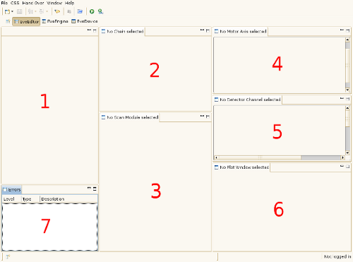

The image below shows an overview of the EVE Editor.

| 1 | Editor Area | graphical representation of scans |
| 2 | Chain View | chain properties |
| 3 | Scan Module View | scan module properties |
| 4 | Motor Axis View | motor axis properties |
| 5 | Detector Channel View | detector channel properties |
| 6 | Plot Window View | plot window properties |
| 7 | Error View | message log |
The first thing you should do is create a new scan description .